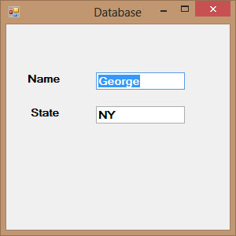

Visual Studio 2013 Lesson 34: Working with Databases-Creating Connection
[Lesson 33] << [Contents] >> [Lesson 35]
34.1 Creating Connection to a Database using ADO.NET
ADO.NET offers a number of connection objects such as OleDbConnection, SqlConnection and more. OleDbConnection is used to access OLEDB data such as Microsoft Access whilst SqlCOnnection is used to access data provided by Microsoft SQL server. Since we will work with SQL database in our example, we will use the SqlConnection object.
To initialize the variable to a new SqlConnection object, we use the following syntax:
Private MyCn As New SqlConnection
MyCn.ConnectionString = “Data
Source=TOSHIBA-PC\SQL2012; AttachDbFilename=C:\Program
Files\Microsoft SQL Server\MSSQL11.SQL2012\MSSQL\DATA\Test.mdf; ” &
_
“User Instance=True;Integrated
Security=SSPI”* You need to change the reference to the SQL
server (TOSHIBA-PC\SQL2012) as well as the path to database file
Test.mdf .After establishing connection
to the database, you can open the database using the following
syntax:MyCn.Open()
34.2 Populating Data in ADO.NET
Establishing connection to a database in Visual Basic 2013 using SqlConnection alone will not present anything tangible things to the user to manipulate the data until we add more relevant objects and write relevant codes to the project.
The next step is to create an instance of the SqlDataAdpater in our code so that we can populate the DataTable with data from the data source. Besides, you also need to create an instance of the DataTable. Other than that, you should also create an instance of the SqlCommandBuilder which is used to manipulate data such as updating and deleting data in the data table and send the changes back to the data source. The statements are:
Private MyDatAdp As New
SqlDataAdapter
Private MyCmdBld As New SqlCommandBuilder
Private MyDataTbl As New DataTable
Besides that, we need to declare a variable to keep track of the user’s current row within the data table. The statement is
Private MyRowPosition As Integer = 0
Having created the above of objects, you need to include the following statements in the Sub Form_Load event to start filling the DataTable with data from the data source. The statements are as follows:
MyDatAdp = New
SqlDataAdapter(“Select* from Contacts”, MyCn)
MyCmdBld = New SqlCommandBuilder(MyDatAdp)
MyDatAdp.Fill(MyDataTbl)
After filling up the DataTable , we need to write code to access the data. To access data in the DataTable means that we need to access the rows in the table. We can achieve this by using the DataRow object. For example, we can write the following to access the first row of the table and present the data via two text boxes with the name txtName and txtState respectively:
Dim MyDataRow As DataRow = MyDataTbl.Rows(0)
Dim strName As String
Dim strState As String
strName = MyDataRow(“ContactName”)
strState = MyDataRow(“State”)
txtName.Text = strName.ToString
txtState.Text = strState.ToStringMe.showRecords()
* The two fields being referenced here are ContactName and State. Note Index 0 means first row.
showRecords() is a sub procedure created to show data in the text boxes. The code is as follows:
Private Sub showRecords()If MyDataTbl.Rows.Count = 0
Then
txtName.Text = “”
txtState.Text = “”
Exit Sub
End IftxtName.Text = MyDataTbl.Rows(MyRowPosition)(“ContactName”).ToString
txtState.Text = MyDataTbl.Rows(MyRowPosition)(“State”).ToString
End Sub
The Code
Public Class Form1
Private MyDatAdp As New SqlDataAdapter
Private MyCmdBld As New SqlCommandBuilder
Private MyDataTbl As New DataTable
Private MyCn As New SqlConnection
Private MyRowPosition As Integer = 0
Private Sub Form1_Load(sender As Object, e As EventArgs) Handles MyBase.Load
MyCn.ConnectionString = “Data
Source=TOSHIBA-PC\SQL2012; AttachDbFilename=C:\Program Files\Microsoft SQL
Server\MSSQL11.SQL2012\MSSQL\DATA\Test.mdf; ” & _
“User Instance=True;Integrated Security=SSPI”
MyCn.Open()
MyDatAdp = New SqlDataAdapter(“Select* from
Contacts”, MyCn)
MyCmdBld = New SqlCommandBuilder(MyDatAdp)
MyDatAdp.Fill(MyDataTbl)
Dim MyDataRow As DataRow = MyDataTbl.Rows(0)
Dim strName As String
Dim strState As String
strName = MyDataRow(“ContactName”)
strState = MyDataRow(“State”)
TxtName.Text = strName.ToString
TxtState.Text = strState.ToString
Me.showRecords()
End Sub
Private Sub showRecords()
If MyDataTbl.Rows.Count = 0 Then
txtName.Text = “”
txtState.Text = “”
Exit Sub
End If
txtName.Text =
MyDataTbl.Rows(MyRowPosition)(“ContactName”).ToString
TxtState.Text = MyDataTbl.Rows(MyRowPosition)(“State”).ToString
End Sub
End Class
The output interface
Figure 34.1
{kind=link}
We shall discuss how to navigate the database and manipulate data in next lesson.